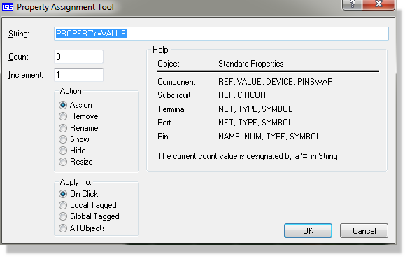
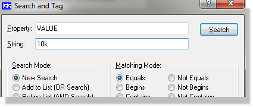
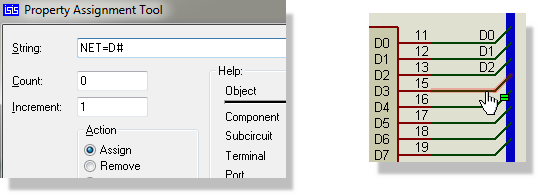
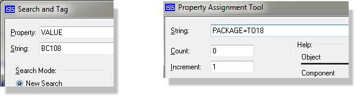
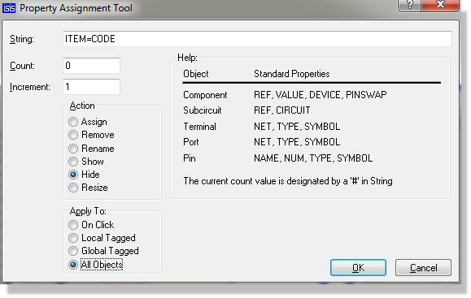
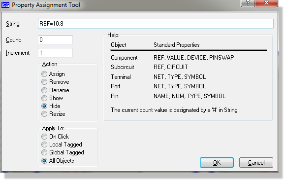
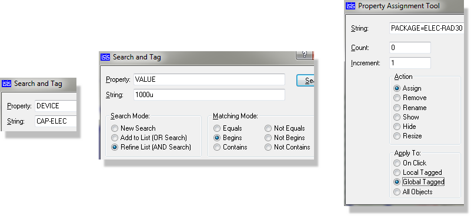

The property assignment tool is a very flexible way to change component properties on the schematic. For component properties, this has now been largely superseded by the Design Explorer which allows you to edit the schematic properties in an Excel like view. However, the PAT remains a very useful tool for applying other object properties, particularly wire labels (e.g. tapping a bus).
See Also:
The PAT is operated from a modestly complex dialogue form with the following fields:

The Property Assignment Dialogue Form
| Field | Description |
|
String |
The property assigment , or property keyword on which the selected action will be performed for each object |
|
Count |
the initial value for the counter. The counter is incremented on each application of the PAT. The current value of the counter may be included in the string by using the hash (#) character - see examples. |
|
Action |
The action you wish to perfrom - see PAT actions. |
|
Apply |
The application mode in which you want the PAT to operate - see PAT application modes |
| Field | Description |
|
ASSIGN |
The string should contain a property definition of the form: keyword=value and this property will then be assigned to the selected objects. If you want to assign values that run in a sequence, such as D0, D1,D2, etc then use the hash('#') character in the value and set the initial count as required. Both user and system properties may be assigned: assigning system properties may cause graphical changes to your drawing. |
|
REMOVE |
The string should contain a property keyword only and this property will be removed from the selected objects. Only user properties can be removed. |
|
RENAME |
The string should contain a property assignment of the form: current_keyword=new_keyword The name to the left of the assignment is the existing property name you wish to rename; the name to the right is the new name of the property. Only user properties can be renamed. |
|
SHOW |
The string should contain a property keyword only and this property will be made visible for the selected objects. All user properties and system properties can be shown. |
|
HIDE |
The string should contain a property keyword only and this property will be hidden for the selected objects. All user properties and system properties can be shown. |
|
RESIZE |
The string should contain an assignment such as : REF=20,16 and the given property will be assigned a new height and width for the selected objects. Only textual system properties may be resized. Changing a labels text size implicitly sets the height and width attributes of the labels text style to be local and that thereafter, changes to the global text style for the label will not be reflected in these labels. |
The selected PAT action can be applied to the design in the following ways:
| Field | Description |
|
On Click |
On selecting the OK button, the selection mode icon is selected. Each object on which you click left has the selected action performed upon it. When you select a different icon the PAT is cancelled. This mode is the only way to apply the PAT to wires, in order to assign wire labels, Proteus cannot perform PAT assignments on tagged wires because the would be no way for it to know where to put the wire labels. |
|
Local Tagged |
The selected action is performed on all tagged objects on the current sheet only. You can select the tagged objects either individually or with the search and tag command. |
|
Global Tagged |
The selected action is performed on all tagged objects across the entire design. You can select the tagged objects either individually or with the search and tag command. |
|
All Objects |
The selected action is performed on all the objects on the design. |
The Search and Tag dialogue allows you to search within a design for components or other objects matching specified criteria. The criteria are specified by the properties of the object type you are searching for. For example, a search for all components with a value of 10k would look like the following :

A Search for all components with a value of 10k
Search results are displayed in a list box at the bottom of the dialogue. You can zoom and centre the schematic on a particular component by double clicking the entry in the list box for that component.
The Search and Tag dialogue form provides the following additional functionality :
A number of mode match criteria are available allowing you greater flexibility when processing searches.
Having completed your original search you can refine or extend your search by changing the search parameters and selecting either the AND or the OR search as required.
You can search across the entire design or only on the current sheet. By default a search across the entire design is selected.
When you zoom into an object from the list box all the search item results will highlight and the dialogue form will exit to allow you an unrestricted view of the schematic. However, the list box automatically repopulates itself with all currently tagged components when you invoke the Search and Tag command. You can browse the search results therefore by simply re-invoking the dialogue box (default shortcut key is ‘T’) and double clicking on the next item in the list.
The Property Assignment Tool and Search & Tag command provide great power and flexibility when it comes to manipulating object properties. However, they can seem somewhat daunting to beginners. With this in mind, some step by step examples to get you started are given below.
To label a set of bus taps:

Labelling a set of bus taps with the Property Assignment Tool
To assign a package to all the BC108s in a design:

To rename all ITEM properties to CODE properties:

Renaming properties globally with the Property Assignment Tool
To hide all package properties:
Hiding package properties globally with the Property Assignment Tool
To resize the component references:

Resizing component references globally with the Property Assignment Tool
To assign larger packages to 1000uF capacitors:
